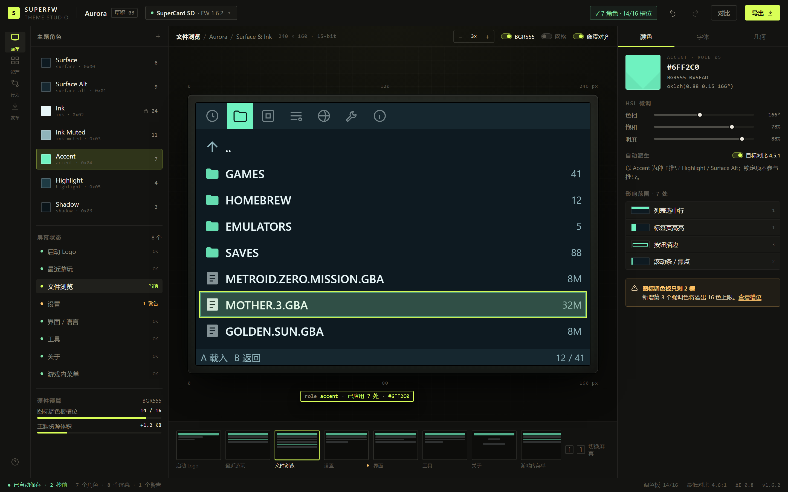
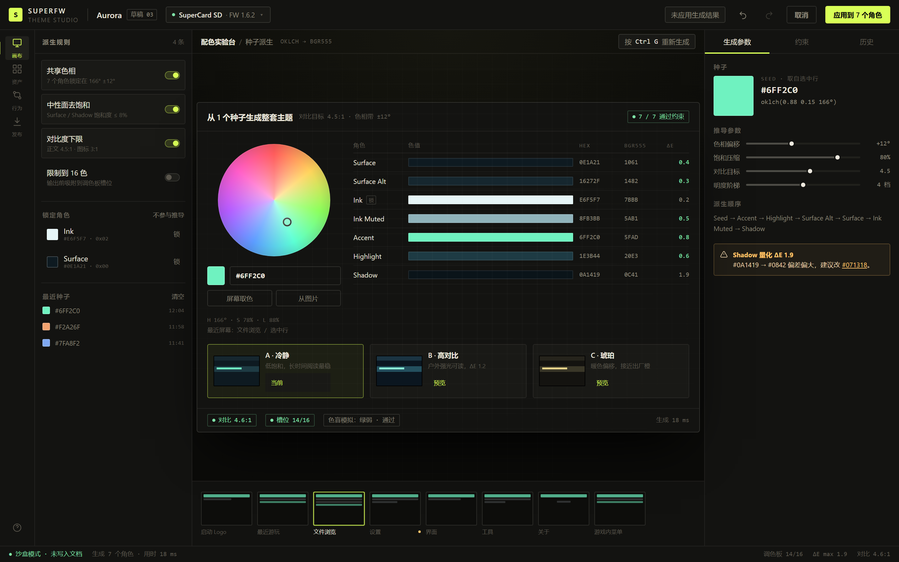
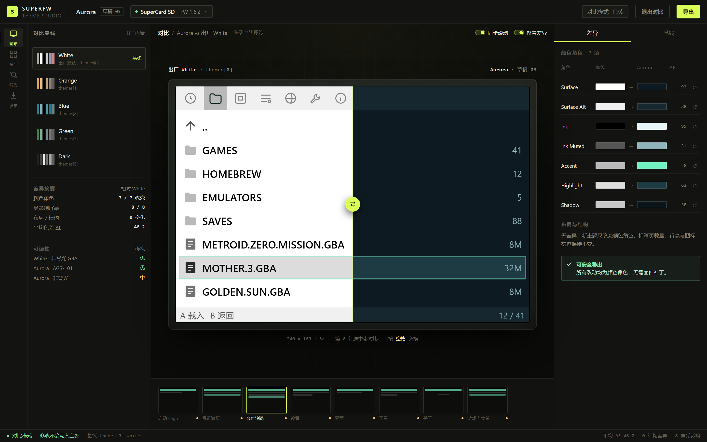
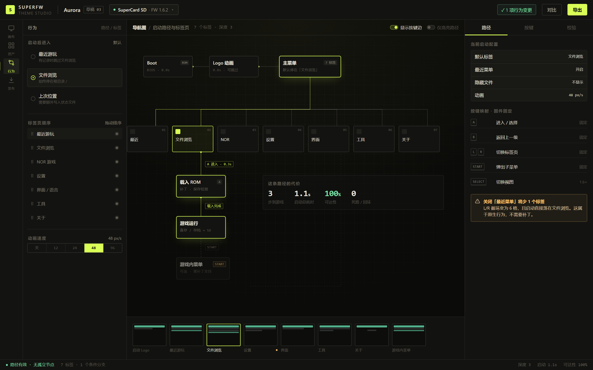
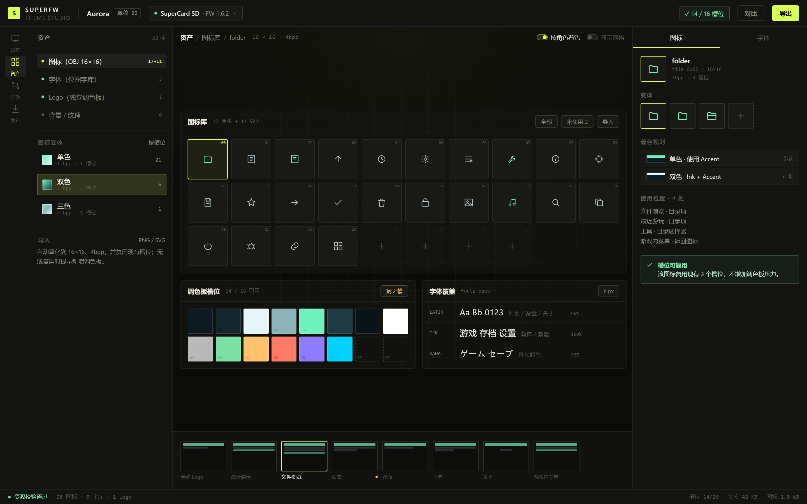
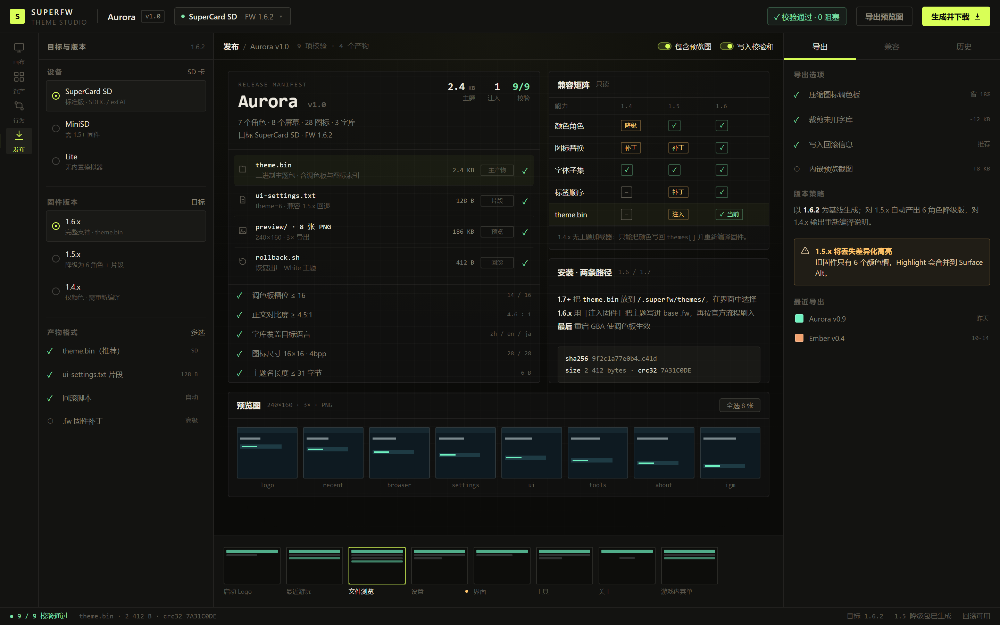
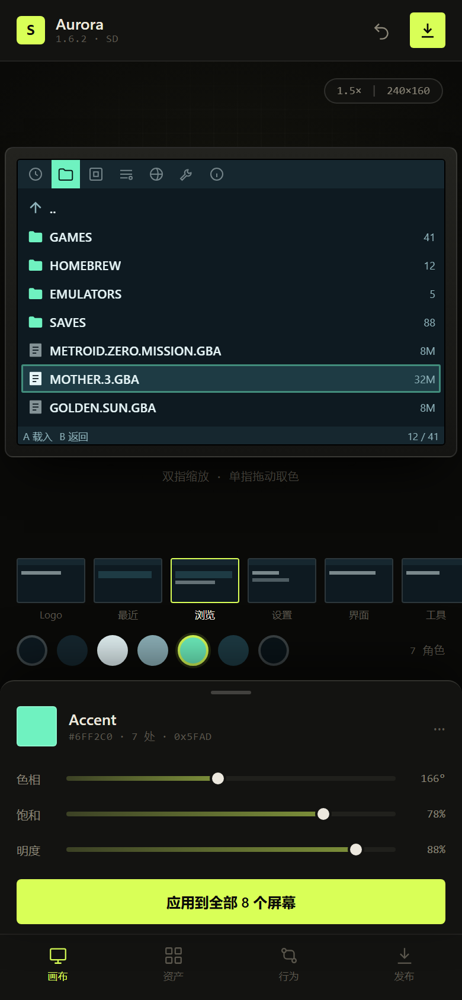

给 SuperFW 补上缺失的那一层：一个以画布为中心的主题工作台
审计发现，这个固件仓库里其实没有 Web 界面——主题是写死在 menu.c 里的 6 组颜色常量，改一次要重编译、刷一次机。下面这份提案，先把现状拆开，再给出一个彻底换掉操作逻辑的 Web 端设计：语义角色代替调色板下标，画布代替设置列表，约束预算代替事后报错。
现有界面审计
先说结论：这个仓库里没有 Web 界面。全量检索 .html / .js / .ts / .css 的结果为 0 个文件；固件是纯 C + ARM 汇编（src/ 70 个文件），资源是编译期打包的位图与字库。Web 侧只有一个独立的 Hugo 文档站（superfw.davidgf.net，不在此仓库），它是说明书，不是可操作的界面。
所以「现有界面」只有两层：卡带上的 240×160 菜单，以及文档站。前者才是主题真正作用的对象，也是这次重设计的锚点。
设备端 UI 的解剖
菜单是一套手写的 Mode-4 位图 UI：顶部 16px 图标条，下面 16px 行高的列表，弹窗用 window 层遮罩，图标是 16×16 的 OBJ 图块。下面这张示意图标出了它与主题相关的每个区域——新工作台的画布也按同样的分区来做命中检测。
② 列表行 16px · HI 高亮 + FT 文字
③ 底部提示 / 弹窗 · FG 描边 + BG 填充
| 层级 | 代码位置 | 形态 | 可改性 |
|---|---|---|---|
| 菜单骨架 | src/menu.c:49–60 2061–2114 | 7 个顶级标签，L/R 横向切换 | 编译期 |
| 主题表 | src/menu.c:213–228 | 6 组 × 6 色（BGR555） | 编译期 |
| 主题选择 | src/settings.c:106–133 | theme=N 存于 ui-settings.txt | 运行时 |
| 图标 | src/res/icons.h | 17 个 16×16 OBJ 图块，共用 256 色 OBJ 调色板 | 编译期 |
| 字体 | res/fonts/*.hex | unscii-16 位图，8×16，14 种语言 | 编译期 |
| 游戏内菜单 | src/ingame_menu.c | 独立渲染器，复用 IGM_PAL_* 四个槽 | 编译期 |
主题到底是怎么生效的
六个颜色角色（fg / bg / ft / hi / hi_blend / sh）在启动时被写进 GBA 调色板的 16–19 号槽位，游戏内菜单另占 240–243 号槽；图标用的是另一块 256 色 OBJ 调色板，Logo 还有一套独立调色板。颜色是 15-bit（每通道 5 位），任何设计在落盘前都会被量化——这正是新工具需要实时展示的物理约束。
Web 侧现状
文档站是 Hugo 生成的静态站：左侧章节栏 + 单列正文 + 上下篇导航，内容覆盖安装、烧录、存档、补丁、模拟器等。它不提供任何参数化能力——没有主题编辑器、没有配置生成器，用户读完文档仍需回到命令行或源码。
问题诊断
创作闭环断裂
改一个颜色 → 重新编译 → 刷机 → 开机看效果。一轮几分钟，且失败要重刷。作者无法进入「调—看—再调」的节奏。
只有整包，没有角色
6 个预设各是一整套配色，想「保留深色底、只把强调色换成青色」做不到——除非手改源码里的十六进制。
盲改，没有反馈
不知道某个颜色用在哪些界面、改完对比度够不够、量化到 15-bit 会不会脏。所有判断都发生在刷机之后。
没有版本语义
1.4 / 1.5 / 1.6 的调色板槽位和加载能力不同，但没有任何地方告诉作者「这个改动在老固件上会怎样」。
资产管线各自为政
图标走 iconcv.py，字库走 fonts/generator.py，语言走 messages.py。换一个图标要先装 Python 工具链。
这五条指向同一个结论：
缺的不是皮肤，是工作流。
核心目标与设计理念
打开即见 240×160 的真实屏幕，所有编辑都在它上面发生；没有「先去某个页面设置，再回来预览」。
作者调的是 Surface / Accent / Highlight 这些有含义的角色，不是调色板下标；工具负责映射到 16 个硬件槽位。
槽位、对比度、色差、字库覆盖在编辑时实时可见，而不是导出时弹一堆错误。
从想法到可安装的固件/主题包，中间不离开浏览器，不需要装工具链。
非目标：不做像素画编辑器。图标仍由 Aseprite 之类的工具创作，工作台只负责导入、量化、映射与着色。
设计理念
主题编辑本质是测量：色差 ΔE、对比度、槽位占用、字节预算。界面因此借用实验室仪器的语言——刻度、细线、等宽数字、单色底。设置页的隐喻（分组、开关、保存按钮）会掩盖这些量。
工作台自身几乎无彩色：炭黑底、米白字、一个酸性青柠作强调。整个屏幕里唯一饱和的东西是中间那块 240×160 的屏幕——眼睛不需要在「工具的配色」和「作品的配色」之间做区分。
GBA 的限制不该以红色报错的形式出现。调色板只剩 2 槽、某角色量化后 ΔE 偏大、字库缺 8% 字形——这些都变成常驻的预算条和角标，作者在动手前就知道边界在哪。
信息架构：从「七个平行标签」到「一个文档 + 四种模式」
旧结构是设备菜单的直接移植：七个互不相干的标签平铺，设置是一张长列表，改完点保存。新结构围绕一个主题文档组织，四种模式只是同一份文档的不同视角——切换模式不丢上下文，也不需要「保存」。
| 维度 | 现有 | 新设计 |
|---|---|---|
| 导航 | 7 个顶级标签横向循环，A 进入 B 返回 | 左侧 4 个模式 + 底部 8 帧胶片；模式内用检查器分页，不跳页 |
| 对象 | 「主题」= 一个序号（0–5） | 「主题」= 一份文档（角色、资产、行为、目标版本），可命名、可版本化 |
| 编辑单位 | 整包切换 | 单个语义角色；支持锁定、派生、批量应用 |
| 反馈 | 刷机后才知道 | 画布实时渲染 + 量化预览 + 约束角标 |
| 保存 | 模态确认框「保存成功」 | 无保存概念，本地自动存草稿，发布才落产物 |
界面预览
以下均为 1:1 设计稿（1440×900，移动端 390×844），可直接对照实现。设备屏幕内的像素内容为示意，实际应由固件字体渲染器绘制。







设计依据
炭黑仪表台 + 单一强调色。主题工作的核心是判断颜色，工具本身必须中性：#0B0B09 底、#ECE8DE 字、#D9FF57 只用于「当前选中/可交互」。这样 240×160 里的青绿是全场唯一的饱和色，视线自然落到作品上。
细线与等宽数字。1px 分隔线、2px 圆角、10px 大写小标题、等宽数值——借用示波器/测试仪器的语汇，让 ΔE、槽位、字节这些量看起来「可读」而不是装饰。
三层稳定结构：左（对象：角色/屏幕/标签）→ 中（画布）→ 右（当前对象的属性）。任何模式下这三层都不变，只换内容，降低重新学习的成本。
渐进披露：默认只显示 7 个角色和 8 帧屏幕；槽位、ΔE、字库覆盖这些进阶量放在检查器和预算条里，不抢占首屏。
状态与对象分离：「屏幕状态」是导航（去哪一帧），「角色」是编辑对象；两者在左栏分区，避免把「选中某个屏幕」误当成「选中某个颜色」。
主路径 3 步：选屏幕 → 点画布区域 → 调三个滑杆。旧路径是「改代码 → 编译 → 刷机 → 开机 → 判断」，步数从 5 步（分钟级）降到 3 步（秒级）。
次路径可逆：对比模式只读；实验台是沙盒；每个操作都有命名撤销（「把 Accent 调亮」而不是「撤销」）。
键盘优先：Ctrl K 命令面板、[ ] 切屏、空格 A/B、方向键微调 1 单位、Shift 加速 10 单位。专业工具不该只能拖鼠标。
断点按「画布能否整数倍显示」定，而不是按设备宽度定。≥1280 三栏（56 + 252 + 1fr + 312）；900–1280 收起左栏为抽屉，画布保持 3×；<900 单列，画布 1.5×，检查器变底部抽屉，胶片横滑。
触控目标 ≥44px（移动端色点 26px 视觉 + 8px 透明外扩），滑杆轨道 4px 但命中区 28px；桌面端保持 28–32px 的紧凑密度。
色弱友好：角色不仅靠颜色区分，还有名称、序号与图标；提供绿弱/红弱模拟，对比度按 5-bit 量化后的值计算，而不是 sRGB 理论值。
减少不可逆操作：没有「保存」按钮，编辑即草稿（IndexedDB），发布才产生文件；覆盖前自动存快照。
错误可解释：每条校验都带「为什么」和「怎么修」，例如「Shadow 量化 ΔE 1.9 → 建议 #071318」，而不是一句「导出失败」。
落地映射：每个控件对应固件的什么
这套界面之所以能成立，是因为每个编辑项都能对应到一个具体的落点。下表把「界面上能改什么」翻译成「固件里要动什么」，并标出是否需要固件侧配合——这也是版本兼容性设计的依据。
| 界面能力 | 固件落点 | 现状 | 导出方式 | 固件要求 |
|---|---|---|---|---|
| 7 个颜色角色 | menu.c themes[] 调色板 16–19 / 240–243 | 编译期常量 | 主题包 / 注入 .fw / C 数组 | 任意版本 |
| 图标替换与着色 | src/res/icons.h OBJ 调色板 | 编译期资源 | 注入 .fw | 1.5+ 可注入 |
| 字库子集 | res/fonts.pack | 编译期资源 | 注入 .fw | 任意版本 |
| 主题切换 | ui-settings.txt theme=N | 运行时 | 文本片段 | 原生 |
| 动画速度 / 最近菜单 / 隐藏文件 | ui-settings.txt | 运行时 | 文本片段 | 原生 |
| 标签顺序 / 默认标签 | menu.c tab 表 | 编译期 | 注入 .fw | 需补丁 |
| 运行时换主题（不刷机） | 建议新增 /.superfw/themes/ 加载器 | 不存在 | theme.bin | 1.7+ 新功能 |
这张表直接决定了「发布」页的兼容矩阵：绿色 = 原生可做，黄色 = 需要注入/补丁，灰色 = 该版本做不到。工具不隐瞒代价。
兼容性策略（三个层次）
1. 基线声明：文档记录目标固件版本与构建号，导出时把版本写进产物头，加载时校验，不匹配则拒绝而非静默出错。
2. 能力降级：1.5.x 只有 6 个颜色槽时，Highlight 自动合并到 Surface Alt 并在报告里标红；1.4.x 不产出 theme.bin，只给源码补丁说明。
3. 前向兼容：theme.bin 采用 TLV 结构（type-length-value），未知字段跳过而非报错，后续加字段不破坏老加载器。
实施路线
只读工作台
- 解析固件/资源包
- 240×160 画布与 8 帧
- 角色映射与预算条
- 对比模式
可编辑与导出
- 种子派生 + 锁定
- 图标/字库导入与量化
- ui-settings 片段
- 注入 .fw
协作与兼容
- 版本矩阵自动化
- 主题包分享链接
- 移动端微调
- 撤销历史与快照
技术选型建议：Vite + React + TypeScript；画布用 Canvas 2D（不是 DOM）以保证 1:1 像素与取色命中；状态用 Zustand + 命令栈；颜色计算用 culori（OKLCH / ΔE2000）；解析与打包逻辑做成独立 wasm/TS 包，方便 CLI 复用。
待确认
三个决策点，定了就开工
方向已经收敛为「画布为中心的 Web 工作台」，但有三处会显著改变实现范围，需要你拍板：
- 导出形态：先做「注入 .fw」（现在就能用，但要处理固件校验和与版本偏移），还是先推动固件侧加一个 ~2 KB 的 theme.bin 加载器（更干净，但要改固件、等 1.7）？
- 首版范围：只做颜色 + 行为（2 周内可交付、覆盖 80% 需求），还是一次把图标与字库也做进去（+3 周，但真正做到「换一套皮」）？
- 视觉基调：保持这套深色仪表台，还是换成浅色「图纸/编辑器」风格？前者更适合判色，后者更适合长时间阅读文档与团队评审。